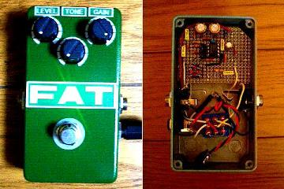
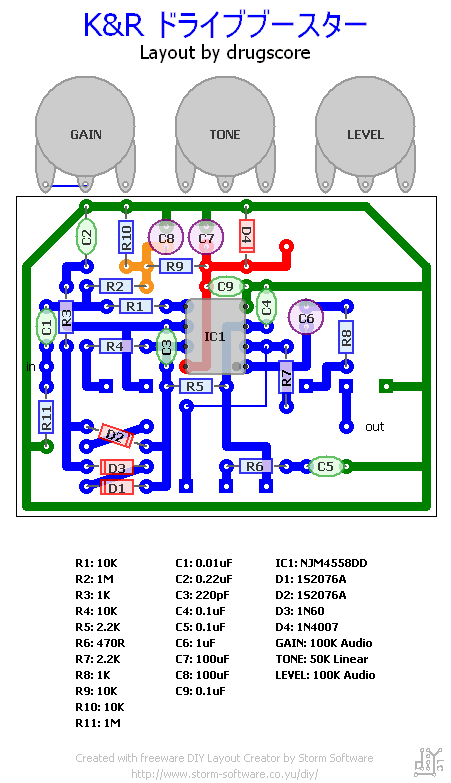
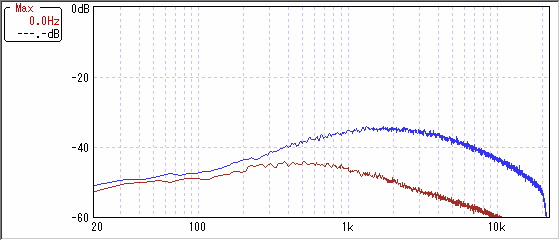
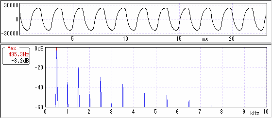

ひよこのページ ドライブブースター
2007年09月03日 カテゴリー：自作エフェクター（アナログ）

ひよこのページのドライブブースターです。以前キットではないトーンなしバージョンの方を作っていました（初自作エフェクター）。やはり半田付けとかが汚かったので作り直しました。これは初めて自作するのにオススメですね。かなり使いやすいエフェクターだと思います。
▽回路図
K&R→ドライブブースタKIT マニュアル
▽レイアウト

基板はポットを一体にしてみました。トーンと他のポットが近すぎた感があります。またもダイオードを交換できるようにソケットをつけてます。でも結局デフォルトが一番気に入っています。
回路がチューブスクリーマーっぽいので色を緑にしました。実際は写真よりエメラルドっぽいです。
追記：色を塗りなおしてシールも変えたので画像差し替え
▽周波数特性

ゲイン真ん中ぐらいで測りました。青がトーン10、赤がトーン0です。若干こもってる感じがしないでもないです。
▽波形・倍音特性

ゲインフル、トーン真ん中で測りました。非対称クリップのはずだけどあんまりそうは見えない波形ですね～倍音も少ないしちょっと期待はずれです。出音は好きですけど。